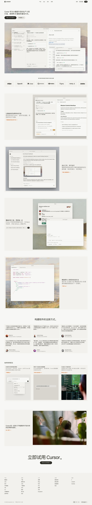

Cursor 主题
Cursor 的 Design.md 主题展示，围绕AI、媒体内容、暗色界面、SaaS 产品组织页面。
AI-first code editor. Sleek dark interface, gradient accents.
AI媒体内容暗色界面SaaS 产品开发工具浅色界面B2B 产品效率工具专业工具

来源
- 来源
- getdesign.md
- 镜像
- github:VoltAgent/awesome-design-md
- 网站
- https://cursor.com/
- 详情
- https://getdesign.md/cursor/design-md
色板
#f7f7f4: #f7f7f4#26251e: #26251e#ffffff: #ffffff#d04200: #d04200#f54e00: #f54e00#5a5852: #5a5852#807d72: #807d72#a09c92: #a09c92#e6e5e0: #e6e5e0#efeee8: #efeee8#cfcdc4: #cfcdc4#fafaf7: #fafaf7
字体
display: CursorGothicbody: Helvetica Neuemono: JetBrains Monohints: CursorGothic,Helvetica Neue,JetBrains Mono,Inter,Fira Code
圆角
control: 8pxcard: 12pxpreview: 16pxpill: 9999pxsource: design-md
间距
xxs: 4pxxs: 8pxsm: 12pxbase: 16pxmd: 20pxlg: 24pxxl: 32pxxxl: 48pxsection: 80pxsource: design-md
使用建议
建议
- 建议：Reserve {colors.primary} (Cursor Orange) for primary CTAs and brand wordmark。
- 建议：Keep display weight at 400. The editorial voice depends on this。
- 建议：Use the cream {colors.canvas} page floor — never pure white。
- 建议：Render every code surface (inline, blocks, IDE panes) in JetBrains Mono。
- 建议：Use timeline pastels only inside in-product agent visualizations — never as system action colors。
避免
- 避免：introduce a secondary brand action color. Cursor Orange is the only one。
- 避免：drop display to bold weights (700+). Magazine voice depends on 400。
- 避免：add drop shadows. Hairlines + ink-on-cream contrast carry the depth。
- 避免：use timeline pastels on non-timeline UI. They're scoped to the agent timeline only。
- 避免：extract a CTA color from a third-party widget (cookie consent, OneTrust). The brand's CTA is what appears on actual product CTAs。
查看 DESIGN.md